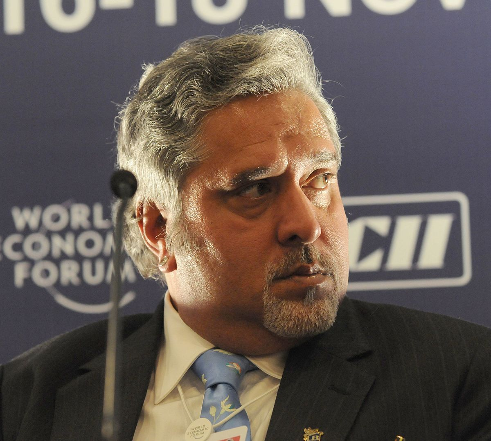
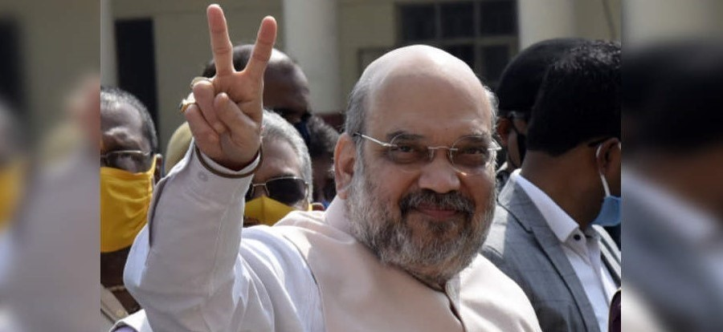
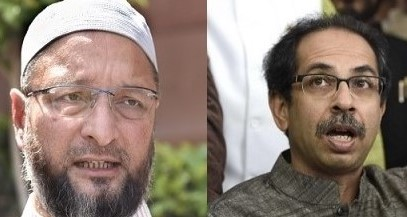
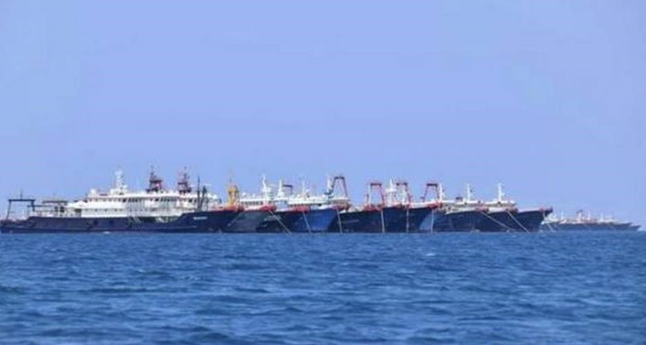

Vijaya Mallya, Nirav Modi and Mehul Chowksi are "coming back!
NEW DELHI: Finance minister Nirmala Sitharam on Thursday said that fugitive businessmen Vijaya Mallya,Nirav Modi and Mehul Chowksi are "coming back" to India" to face the law.
The government is pursuing the extradition of Mallya and Modi from the UK while Choksi is believed to be in Antigua.
Vijay Mallya, Nirav Modi, Mehul Choksi are all coming back to face law of the land, Sitharaman said in the Rajya Sabha while replying to a debate on the insurance amendment bill.
Mallya, an accused in bank loan default case of over Rs 9,000 crore involving his defunct Kingfisher Airlines, is in the UK since March 2016.
Nirav Modi and Mehul Choksi, are accused in a scam involving fake guarantees in the name of state-run PNB to secure overseas loans. Both fled India in 2018, before the CBI began probe.
Last month, Nirav Modi, the diamond merchant wanted on charges of fraud and money laundering in the estimated $2-billion Punjab National Bank (PNB) scam case, had lost his legal battle against extradition as a UK judge ruled that he does have a case to answer before the Indian courts.


BJP’s Bengal vow: CAA on Day 1, Rs 10,000/year for refugee families
The manifesto has a special focus on Bengali culture and women, who were promised free education from kindergarten to post-graduation level, 33% reservation in jobs and free rides in public transport.

Shiv Sena Enters Into Alliance With AIMIM
The Uddhav Thackeray led Shiv Sena has entered into an alliance with Asaduddin Owaisi led AIMIM for the Standing Committee President polls in the Amravati Municipal Corporation.

Philippines accuses China of ‘incursion’ in disputed sea
The neighbour Philippines on Sunday accused China of “incursion” after more than 200 militia boats were spotted near a disputed reef in the South China Sea, in a rare rebuke of its neighbour.